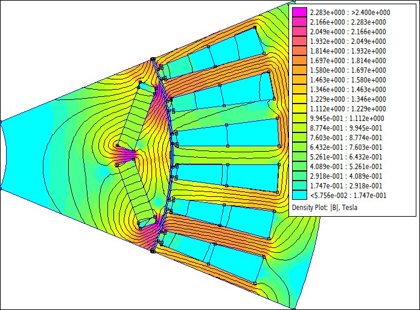
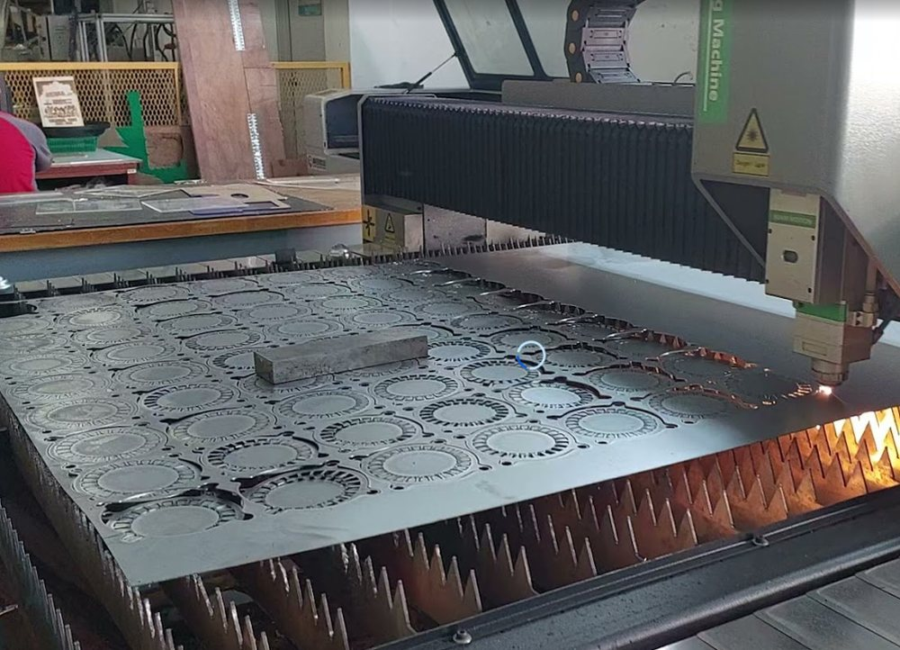
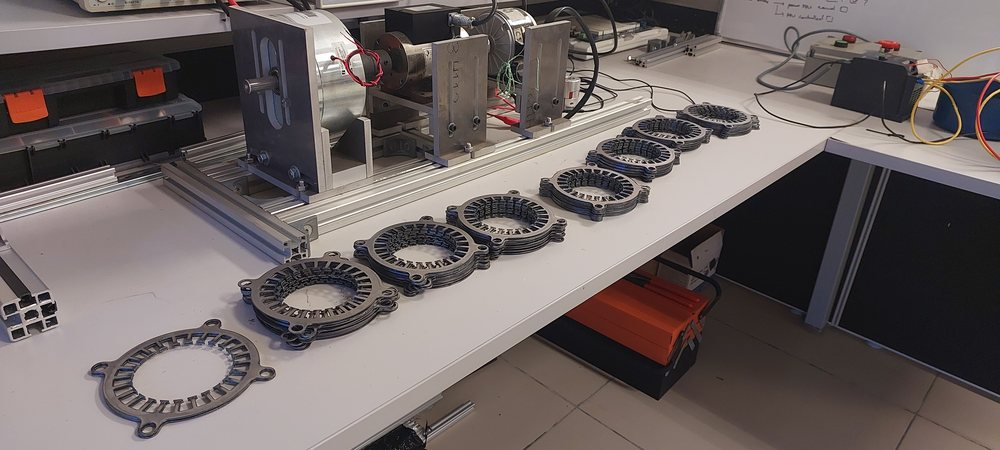

Electric machine design, done with you
EMDLab works with companies on motor sizing, topology and material choices, and finite element analysis, from a first concept to a checked design.
What we can take on
Motor sizing
From a vehicle or machine specification to torque, speed, main dimensions and winding, with the reasoning written down.
Topology and materials
Comparing IPM, induction, wound-field, SynRM and PM-assisted SynRM, and choosing steel, magnet grade and winding for cost and supply.
Finite element analysis
Torque, ripple, back-EMF, losses and demagnetisation checks by finite element analysis, including models in the open-source FEMM.
Hairpin and thermal design
Hairpin winding layout, AC loss and the thermal-electrical trade-offs that set continuous rating.
Prototype support
Lamination cutting, winding and assembly of prototype and demonstration machines at EMDLab.
Technical training
Short courses for your engineers, built on your own product as the case.



Courses built around your product
Short courses on motor design, finite element analysis with FEMM, and drives, using your own machines as the case. For the standard programmes, see EV Traction Motor and the Induction Motor Trainer.
The research behind the work
The machines and methods we use with clients are the ones we publish on.
16 publications · 10 journal articles · 6 conference papers · since 2013
Synchronous reluctance machine design
Segmented and flux-barrier rotors, torque ripple, assembly tolerances and magnetic forces.
- Segmented rotor: a viable alternative to flux-barrier design for small-diameter synchronous reluctance machinesRasid et al. · Electrical Engineering · 2025
- The effects of assembly-induced airgap irregularities on static torque in SynRM with dovetail-assembled segmented rotorsRasid, Jamil · ICEMS 2025, Busan · 2025
- A novel and simple torque ripple minimization method of synchronous reluctance machine based on torque function methodWu et al., Rasid · IEEE Transactions on Industrial Electronics · 2021
Show 3 more
- Torque ripple analysis of synchronous reluctance motor with different rotor topologies for application with dimensional constraintRasid et al. · Journal of Electrical Engineering & Technology · 2020
- Comparison of radial and tangential forces effect on the radial vibrations of synchronous machinesHallal, Rasid et al. · IEEE ICIT 2019, Melbourne · 2019
- Fast electro-mechanical performance evaluation tool for synchronous reluctance machineRasid, Benkara, Lanfranchi · Int. J. Precision Engineering and Manufacturing · 2017
Thermal modelling of electrical machines
Lumped thermal models, contact resistances, and how temperature limits performance over driving cycles.
- Influence of temperature on power factor and operating area of SynRM machine in automotive equipmentRasid et al. · Int. J. Power Electronics and Drive Systems · 2024
- Preliminary thermal evaluation of actuator for steer-by-wire vehicleRasid et al. · IEEE Transactions on Vehicular Technology · 2018
- Determination of thermal contact resistances for small TENV electrical machineMeksi, Rasid et al. · Sensors & Transducers · 2016
Show 4 more
- A thermal study on small synchronous reluctance machine in automotive cycleRasid et al. · IEEE ISIE 2016 · 2016
- Thermal model of stator slot for small synchronous reluctance machineRasid et al. · ICEM 2014 · 2014
- Détermination rapide d’un modèle thermique de machine à synchro-réluctanceRasid · La Revue 3EI, SEE · 2013
- Simple lumped parameter thermal model with practical experimental fitting method for synchronous reluctance machineRasid et al. · EPE 2013 · 2013
Brushed DC machines
Armature temperature by thermal imaging, thermal transfer functions and material selection.
- Linearity analysis of a brushed DC machine thermal system in response to speed input using transfer functionMat Jahak, Rasid · Int. J. Power Electronics and Drive Systems · 2026
- Optimizing material selection for brushed DC motor components using the VIKOR method: a comprehensive performance evaluationZulkafli, Rasid, Nafiz · Multiscale and Multidisciplinary Modeling, Experiments and Design · 2025
- Experimental evaluation of temperature distribution in armature of a brushed DC machine using thermal imagingRasid et al. · ICEM 2022, Valencia · 2022
From first call to report
- ScopeA call to agree the question, the data you can share, and what a useful answer looks like.
- ProposalA written scope, timeline and cost, contracted through UMPSA.
- DeliveryRegular reviews, then a report with the models, numbers and assumptions behind every recommendation.
Talk to the team at EMDLab
Tell us what you teach, build or need designed. We reply within one working day.